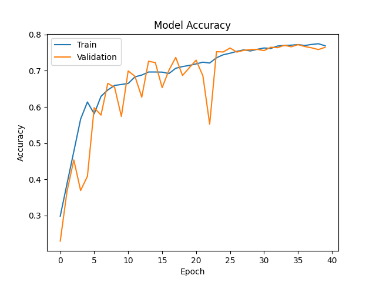
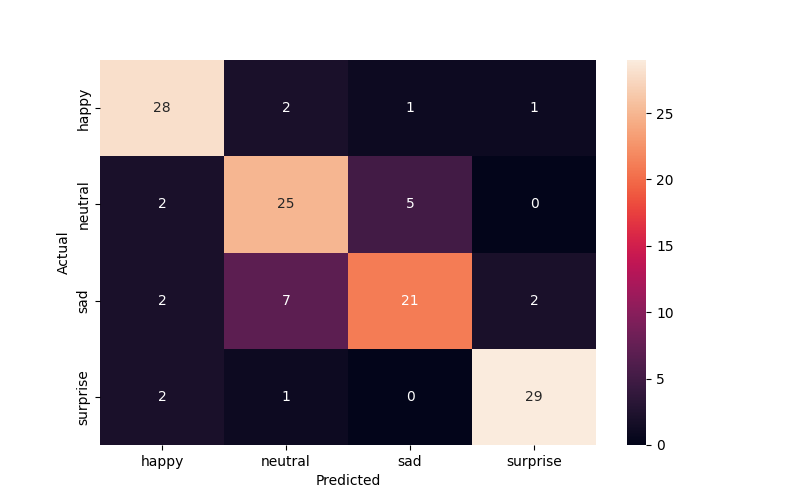

        <html>
        <head><title>Model Summary - 2024-04-10 13:46:42</title></head>
        <body>
        <h1>Model Configuration</h1>
        <pre>model:
  compile:
    learning_rate: 0.01
    optimizer: Adam
    optimizer_name: adam
  data:
    color_layers: 1
    color_mode: grayscale
    img_height: 48
    img_width: 48
    use_data_loaders: true
  layers:
  - filters: 64
    kernel_size:
    - 2
    - 2
    padding: same
    type: Conv2D
  - type: BatchNormalization
  - alpha: 0.1
    type: LeakyReLU
  - pool_size:
    - 2
    - 2
    type: MaxPooling2D
  - filters: 128
    kernel_size:
    - 2
    - 2
    padding: same
    type: Conv2D
  - type: BatchNormalization
  - alpha: 0.1
    type: LeakyReLU
  - pool_size:
    - 2
    - 2
    type: MaxPooling2D
  - filters: 256
    kernel_size:
    - 2
    - 2
    padding: same
    type: Conv2D
  - type: BatchNormalization
  - alpha: 0.1
    type: LeakyReLU
  - pool_size:
    - 2
    - 2
    type: MaxPooling2D
  - filters: 512
    kernel_size:
    - 2
    - 2
    padding: same
    type: Conv2D
  - type: BatchNormalization
  - alpha: 0.1
    type: LeakyReLU
  - pool_size:
    - 2
    - 2
    type: MaxPooling2D
  - filters: 128
    kernel_size:
    - 2
    - 2
    padding: same
    type: Conv2D
  - type: BatchNormalization
  - alpha: 0.1
    type: LeakyReLU
  - pool_size:
    - 2
    - 2
    type: MaxPooling2D
  - type: Flatten
  - activation: relu
    type: Dense
    units: 512
  - activation: relu
    type: Dense
    units: 128
  - type: Dense
    units: 64
  - type: BatchNormalization
  - type: ReLU
  - activation: softmax
    type: Dense
    units: 4
  train:
    batch_size: 128
    epochs: 40
    patience: 7
</pre>
        <h1>Model Summary</h1>
        <pre>Model: "sequential"
┏━━━━━━━━━━━━━━━━━━━━━━━━━━━━━━━━━━━━━━┳━━━━━━━━━━━━━━━━━━━━━━━━━━━━━┳━━━━━━━━━━━━━━━━━┓
┃ Layer (type)                         ┃ Output Shape                ┃         Param # ┃
┡━━━━━━━━━━━━━━━━━━━━━━━━━━━━━━━━━━━━━━╇━━━━━━━━━━━━━━━━━━━━━━━━━━━━━╇━━━━━━━━━━━━━━━━━┩
│ conv2d (Conv2D)                      │ (None, 48, 48, 64)          │             320 │
├──────────────────────────────────────┼─────────────────────────────┼─────────────────┤
│ batch_normalization                  │ (None, 48, 48, 64)          │             256 │
│ (BatchNormalization)                 │                             │                 │
├──────────────────────────────────────┼─────────────────────────────┼─────────────────┤
│ leaky_re_lu (LeakyReLU)              │ (None, 48, 48, 64)          │               0 │
├──────────────────────────────────────┼─────────────────────────────┼─────────────────┤
│ max_pooling2d (MaxPooling2D)         │ (None, 24, 24, 64)          │               0 │
├──────────────────────────────────────┼─────────────────────────────┼─────────────────┤
│ conv2d_1 (Conv2D)                    │ (None, 24, 24, 128)         │          32,896 │
├──────────────────────────────────────┼─────────────────────────────┼─────────────────┤
│ batch_normalization_1                │ (None, 24, 24, 128)         │             512 │
│ (BatchNormalization)                 │                             │                 │
├──────────────────────────────────────┼─────────────────────────────┼─────────────────┤
│ leaky_re_lu_1 (LeakyReLU)            │ (None, 24, 24, 128)         │               0 │
├──────────────────────────────────────┼─────────────────────────────┼─────────────────┤
│ max_pooling2d_1 (MaxPooling2D)       │ (None, 12, 12, 128)         │               0 │
├──────────────────────────────────────┼─────────────────────────────┼─────────────────┤
│ conv2d_2 (Conv2D)                    │ (None, 12, 12, 256)         │         131,328 │
├──────────────────────────────────────┼─────────────────────────────┼─────────────────┤
│ batch_normalization_2                │ (None, 12, 12, 256)         │           1,024 │
│ (BatchNormalization)                 │                             │                 │
├──────────────────────────────────────┼─────────────────────────────┼─────────────────┤
│ leaky_re_lu_2 (LeakyReLU)            │ (None, 12, 12, 256)         │               0 │
├──────────────────────────────────────┼─────────────────────────────┼─────────────────┤
│ max_pooling2d_2 (MaxPooling2D)       │ (None, 6, 6, 256)           │               0 │
├──────────────────────────────────────┼─────────────────────────────┼─────────────────┤
│ conv2d_3 (Conv2D)                    │ (None, 6, 6, 512)           │         524,800 │
├──────────────────────────────────────┼─────────────────────────────┼─────────────────┤
│ batch_normalization_3                │ (None, 6, 6, 512)           │           2,048 │
│ (BatchNormalization)                 │                             │                 │
├──────────────────────────────────────┼─────────────────────────────┼─────────────────┤
│ leaky_re_lu_3 (LeakyReLU)            │ (None, 6, 6, 512)           │               0 │
├──────────────────────────────────────┼─────────────────────────────┼─────────────────┤
│ max_pooling2d_3 (MaxPooling2D)       │ (None, 3, 3, 512)           │               0 │
├──────────────────────────────────────┼─────────────────────────────┼─────────────────┤
│ conv2d_4 (Conv2D)                    │ (None, 3, 3, 128)           │         262,272 │
├──────────────────────────────────────┼─────────────────────────────┼─────────────────┤
│ batch_normalization_4                │ (None, 3, 3, 128)           │             512 │
│ (BatchNormalization)                 │                             │                 │
├──────────────────────────────────────┼─────────────────────────────┼─────────────────┤
│ leaky_re_lu_4 (LeakyReLU)            │ (None, 3, 3, 128)           │               0 │
├──────────────────────────────────────┼─────────────────────────────┼─────────────────┤
│ max_pooling2d_4 (MaxPooling2D)       │ (None, 1, 1, 128)           │               0 │
├──────────────────────────────────────┼─────────────────────────────┼─────────────────┤
│ flatten (Flatten)                    │ (None, 128)                 │               0 │
├──────────────────────────────────────┼─────────────────────────────┼─────────────────┤
│ dense (Dense)                        │ (None, 512)                 │          66,048 │
├──────────────────────────────────────┼─────────────────────────────┼─────────────────┤
│ dense_1 (Dense)                      │ (None, 128)                 │          65,664 │
├──────────────────────────────────────┼─────────────────────────────┼─────────────────┤
│ dense_2 (Dense)                      │ (None, 64)                  │           8,256 │
├──────────────────────────────────────┼─────────────────────────────┼─────────────────┤
│ batch_normalization_5                │ (None, 64)                  │             256 │
│ (BatchNormalization)                 │                             │                 │
├──────────────────────────────────────┼─────────────────────────────┼─────────────────┤
│ re_lu (ReLU)                         │ (None, 64)                  │               0 │
├──────────────────────────────────────┼─────────────────────────────┼─────────────────┤
│ dense_3 (Dense)                      │ (None, 4)                   │             260 │
└──────────────────────────────────────┴─────────────────────────────┴─────────────────┘
 Total params: 1,096,452 (4.18 MB)
 Trainable params: 1,094,148 (4.17 MB)
 Non-trainable params: 2,304 (9.00 KB)
</pre>
        <h2>Test Accuracy</h2>
        <p>
1/1 ━━━━━━━━━━━━━━━━━━━━ 0s 28ms/step - accuracy: 0.8047 - loss: 0.5215
1/1 ━━━━━━━━━━━━━━━━━━━━ 0s 29ms/step - accuracy: 0.8047 - loss: 0.5215

1/1 ━━━━━━━━━━━━━━━━━━━━ 0s 431ms/step
1/1 ━━━━━━━━━━━━━━━━━━━━ 0s 431ms/step
</p>
        <h2>Accuracy Plot</h2>
        
        <h2>Classification Report</h2>
        <pre>              precision    recall  f1-score   support

       happy       0.82      0.88      0.85        32
     neutral       0.71      0.78      0.75        32
         sad       0.78      0.66      0.71        32
    surprise       0.91      0.91      0.91        32

    accuracy                           0.80       128
   macro avg       0.81      0.80      0.80       128
weighted avg       0.81      0.80      0.80       128

</pre>
        <h2>History</h2>
        <pre>Epoch 1: accuracy: 0.2980, loss: 1.3772, val_accuracy: 0.2289, val_loss: 2.0125, learning_rate: 0.0100
Epoch 2: accuracy: 0.3879, loss: 1.2395, val_accuracy: 0.3669, val_loss: 1.5883, learning_rate: 0.0100
Epoch 3: accuracy: 0.4770, loss: 1.1253, val_accuracy: 0.4535, val_loss: 1.1685, learning_rate: 0.0100
Epoch 4: accuracy: 0.5664, loss: 1.0052, val_accuracy: 0.3689, val_loss: 2.0134, learning_rate: 0.0100
Epoch 5: accuracy: 0.6137, loss: 0.9251, val_accuracy: 0.4081, val_loss: 1.9227, learning_rate: 0.0100
Epoch 6: accuracy: 0.5809, loss: 0.9775, val_accuracy: 0.5980, val_loss: 0.9294, learning_rate: 0.0100
Epoch 7: accuracy: 0.6294, loss: 0.8751, val_accuracy: 0.5775, val_loss: 0.9488, learning_rate: 0.0100
Epoch 8: accuracy: 0.6470, loss: 0.8464, val_accuracy: 0.6653, val_loss: 0.8170, learning_rate: 0.0100
Epoch 9: accuracy: 0.6595, loss: 0.8037, val_accuracy: 0.6544, val_loss: 0.8684, learning_rate: 0.0100
Epoch 10: accuracy: 0.6622, loss: 0.8103, val_accuracy: 0.5738, val_loss: 1.0951, learning_rate: 0.0100
Epoch 11: accuracy: 0.6649, loss: 0.7947, val_accuracy: 0.6996, val_loss: 0.7275, learning_rate: 0.0100
Epoch 12: accuracy: 0.6832, loss: 0.7696, val_accuracy: 0.6847, val_loss: 0.7907, learning_rate: 0.0100
Epoch 13: accuracy: 0.6881, loss: 0.7522, val_accuracy: 0.6271, val_loss: 0.9458, learning_rate: 0.0100
Epoch 14: accuracy: 0.6967, loss: 0.7352, val_accuracy: 0.7265, val_loss: 0.6869, learning_rate: 0.0100
Epoch 15: accuracy: 0.6967, loss: 0.7389, val_accuracy: 0.7225, val_loss: 0.6840, learning_rate: 0.0100
Epoch 16: accuracy: 0.6963, loss: 0.7343, val_accuracy: 0.6534, val_loss: 0.7962, learning_rate: 0.0100
Epoch 17: accuracy: 0.6924, loss: 0.7359, val_accuracy: 0.7014, val_loss: 0.7393, learning_rate: 0.0100
Epoch 18: accuracy: 0.7069, loss: 0.7077, val_accuracy: 0.7370, val_loss: 0.6670, learning_rate: 0.0100
Epoch 19: accuracy: 0.7117, loss: 0.7052, val_accuracy: 0.6870, val_loss: 0.7926, learning_rate: 0.0100
Epoch 20: accuracy: 0.7148, loss: 0.6905, val_accuracy: 0.7085, val_loss: 0.7213, learning_rate: 0.0100
Epoch 21: accuracy: 0.7190, loss: 0.6890, val_accuracy: 0.7294, val_loss: 0.6736, learning_rate: 0.0100
Epoch 22: accuracy: 0.7238, loss: 0.6726, val_accuracy: 0.6862, val_loss: 0.7370, learning_rate: 0.0100
Epoch 23: accuracy: 0.7214, loss: 0.6787, val_accuracy: 0.5523, val_loss: 1.1425, learning_rate: 0.0100
Epoch 24: accuracy: 0.7361, loss: 0.6414, val_accuracy: 0.7529, val_loss: 0.6044, learning_rate: 0.0020
Epoch 25: accuracy: 0.7443, loss: 0.6175, val_accuracy: 0.7521, val_loss: 0.6328, learning_rate: 0.0020
Epoch 26: accuracy: 0.7486, loss: 0.6152, val_accuracy: 0.7631, val_loss: 0.5926, learning_rate: 0.0020
Epoch 27: accuracy: 0.7537, loss: 0.6115, val_accuracy: 0.7517, val_loss: 0.6184, learning_rate: 0.0020
Epoch 28: accuracy: 0.7578, loss: 0.6021, val_accuracy: 0.7565, val_loss: 0.5995, learning_rate: 0.0020
Epoch 29: accuracy: 0.7548, loss: 0.6040, val_accuracy: 0.7585, val_loss: 0.6051, learning_rate: 0.0020
Epoch 30: accuracy: 0.7594, loss: 0.5894, val_accuracy: 0.7593, val_loss: 0.6043, learning_rate: 0.0020
Epoch 31: accuracy: 0.7631, loss: 0.5890, val_accuracy: 0.7559, val_loss: 0.6077, learning_rate: 0.0020
Epoch 32: accuracy: 0.7618, loss: 0.5898, val_accuracy: 0.7651, val_loss: 0.5846, learning_rate: 0.0004
Epoch 33: accuracy: 0.7685, loss: 0.5787, val_accuracy: 0.7639, val_loss: 0.5798, learning_rate: 0.0004
Epoch 34: accuracy: 0.7701, loss: 0.5696, val_accuracy: 0.7705, val_loss: 0.5778, learning_rate: 0.0004
Epoch 35: accuracy: 0.7709, loss: 0.5629, val_accuracy: 0.7663, val_loss: 0.5794, learning_rate: 0.0004
Epoch 36: accuracy: 0.7725, loss: 0.5690, val_accuracy: 0.7724, val_loss: 0.5683, learning_rate: 0.0004
Epoch 37: accuracy: 0.7700, loss: 0.5722, val_accuracy: 0.7671, val_loss: 0.5856, learning_rate: 0.0004
Epoch 38: accuracy: 0.7729, loss: 0.5548, val_accuracy: 0.7635, val_loss: 0.5901, learning_rate: 0.0004
Epoch 39: accuracy: 0.7749, loss: 0.5575, val_accuracy: 0.7587, val_loss: 0.5976, learning_rate: 0.0004
Epoch 40: accuracy: 0.7691, loss: 0.5661, val_accuracy: 0.7649, val_loss: 0.5934, learning_rate: 0.0004
</pre>
        <h2>Confusion Matrix</h2>
        
        <h2>Predicted Images</h2>
        
        </body>
        </html>
        